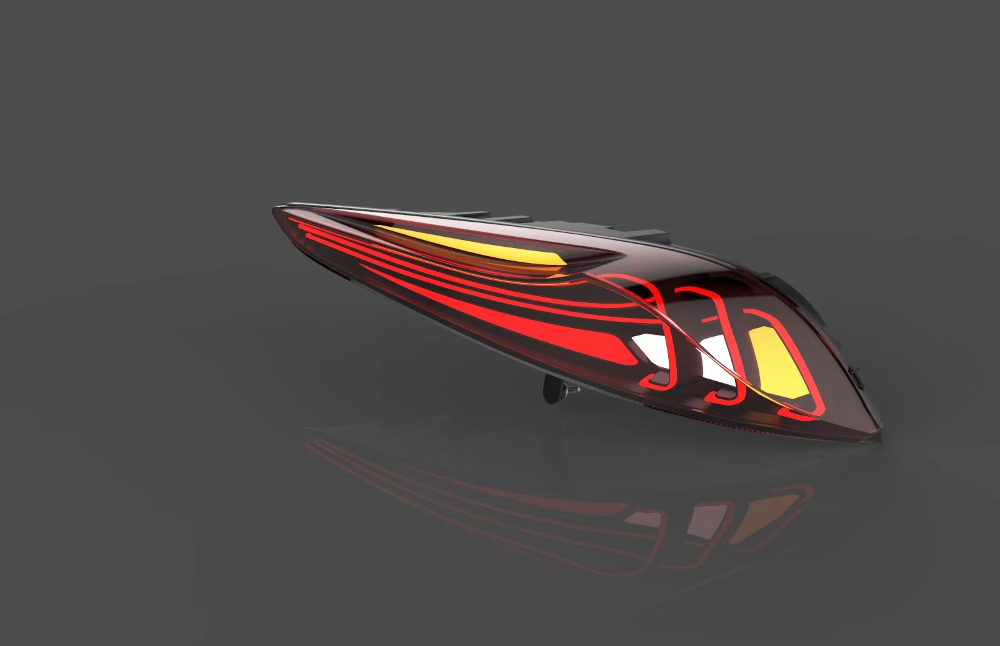
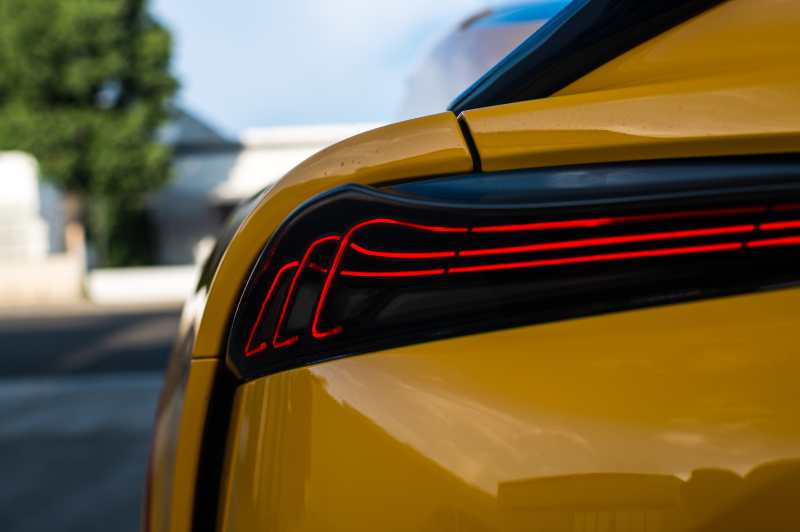
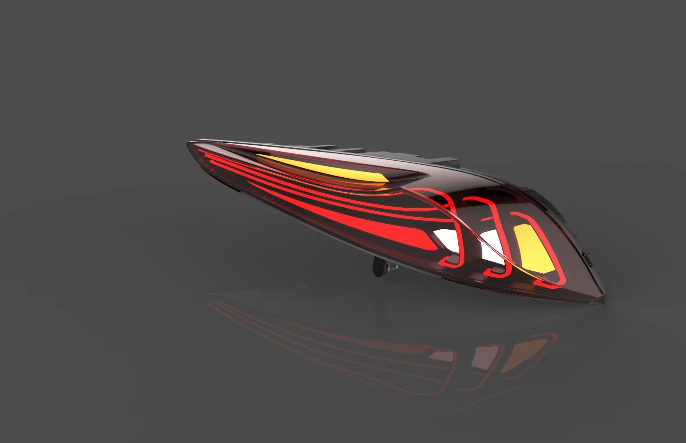
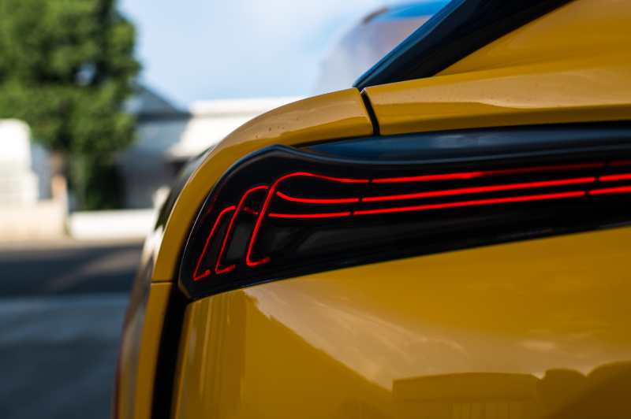

We are proud to introduce our newly designed and manufactured Supra tail lights, adding a unique style and performance to your vehicle. The design of these tail lights is characterized by sleek and aerodynamic elements, seamlessly integrating with the body lines of your Supra, giving it a more dynamic and sporty look. We have paid special attention to the original factory mounting positions, ensuring a perfect fit for your vehicle without the need for any modifications.
These Supra tail lights are not just lighting fixtures; they are a distinctive symbol of personalization for your car. By incorporating the latest lighting technology, we provide exceptional brightness and clarity, ensuring excellent visibility and safety during nighttime driving.
Please contact us
Email: Pmevox@gmail.com
Phone: 2064078836